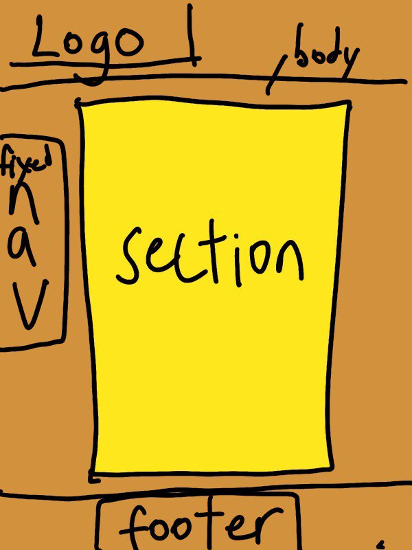

1 external style sheet + 5 internal style sheets
Every pages are linked with one external css.
The purpose of the external css is to apply the theme.
So, all pages have same background, header, menu and footer.
Each page has internal CSS to have further adjustment for the contents.
Double background, line 3 of theme.css (external).
Border radius, line 12 of theme.css (external).
Background-radial gradient, line 48 of theme.css (external).